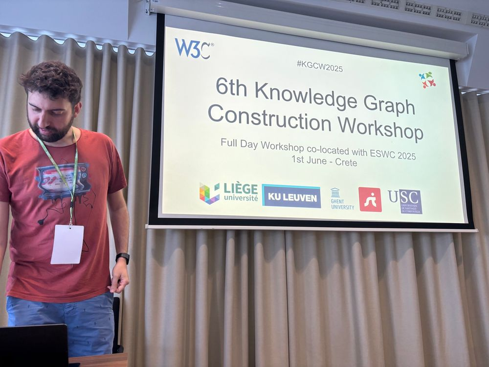
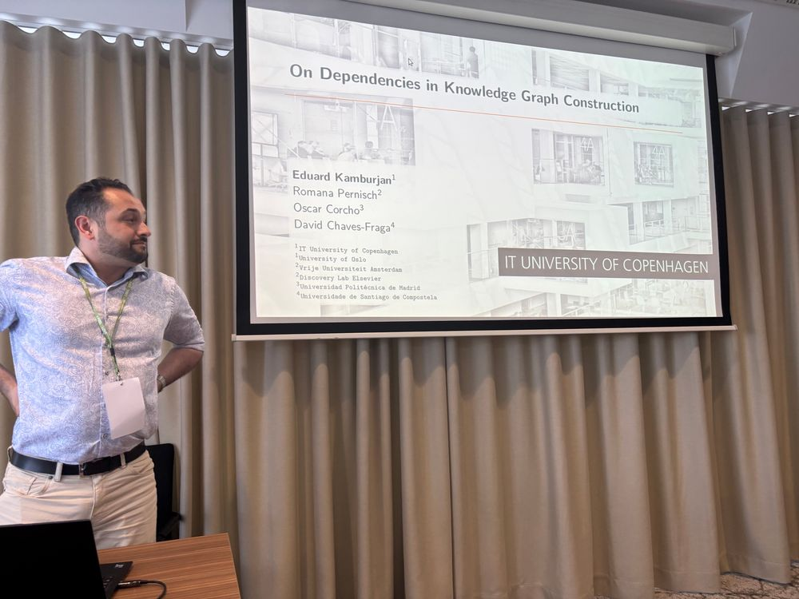
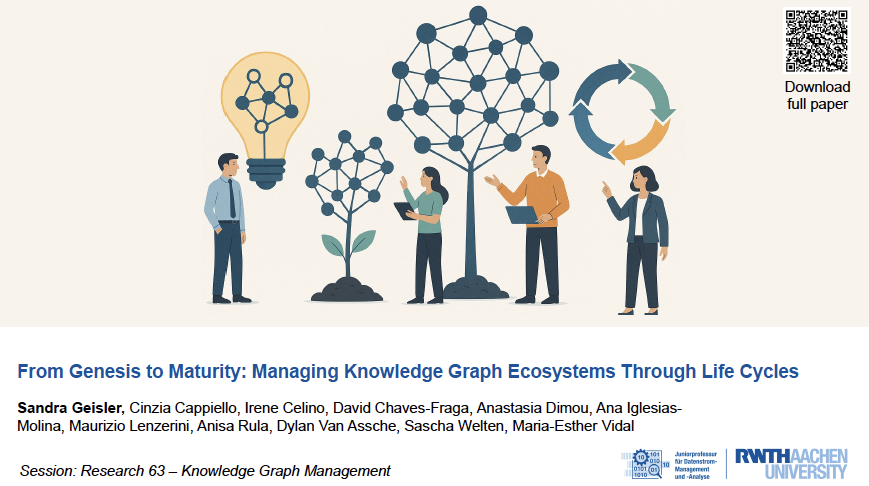
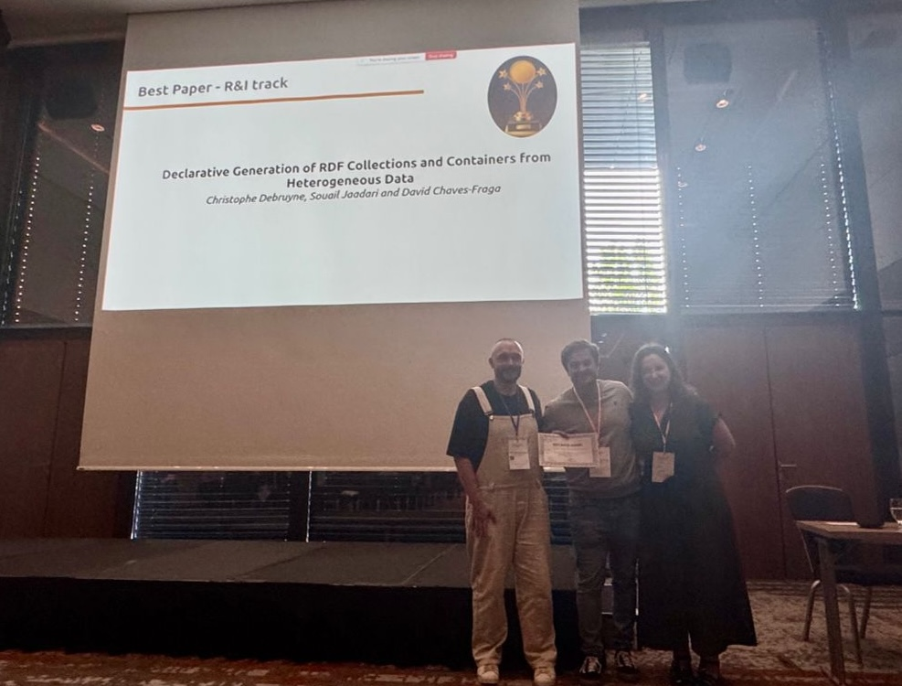
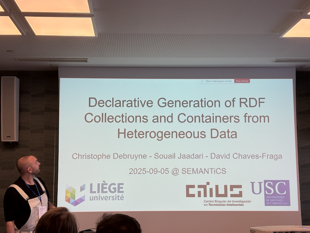
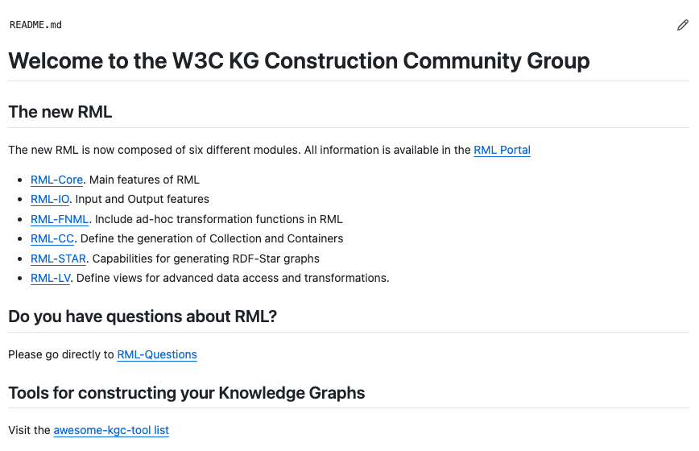
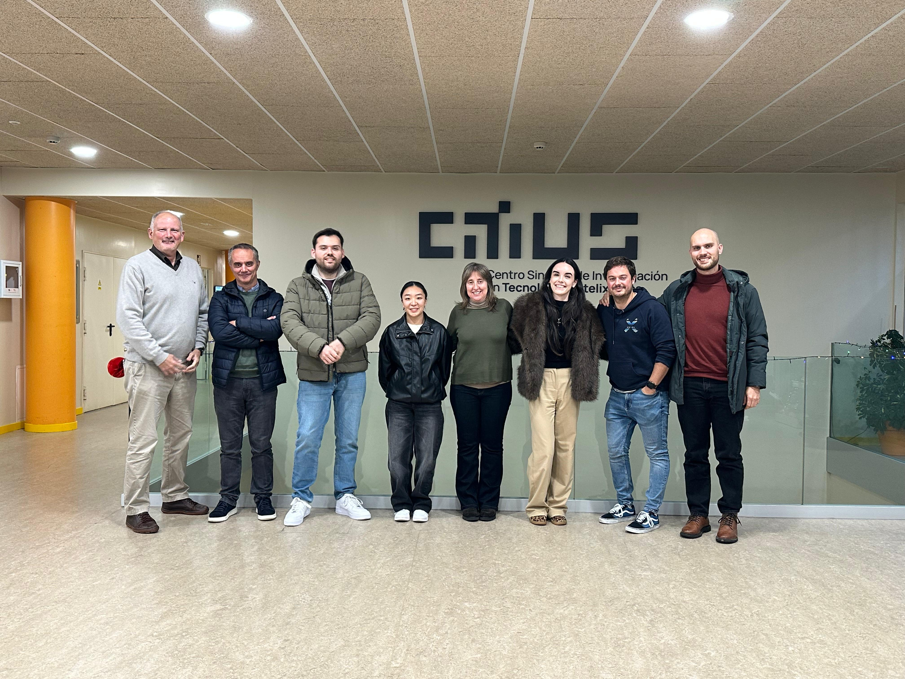
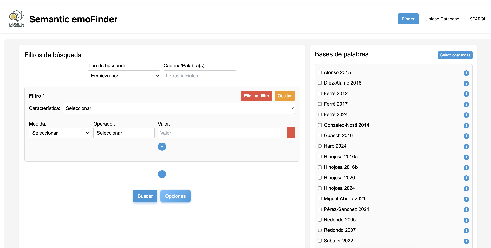

University professors are researchers too — 2025
Events and Travel
Compared with 2024, 2025 was a somewhat quieter year in terms of travel and events. I also felt the need to slow down after my postdoctoral years, which involved frequent trips and continuous conference attendance. For the first time since 2019, I missed my annual appointment with ESWC, held this year in Portorož, Slovenia, where we once again organised the Knowledge Graph Construction Workshop & Challenge. Christophe Debruyne and Umut Serles ran the workshop on site, although the preceding months still involved a considerable amount of organisation and reviewing. We also presented a paper with Romana Pernisch (VU Amsterdam) and Eduard Kamburjan (University of Copenhagen) on the relationship between knowledge graph construction and dependencies in software development. I find this line of work particularly interesting: ontology- and KG-based developments could explore and exploit the idea of dependency much more, in a way similar to libraries in pip or Maven. Unfortunately, this work has paused for now, although I would like to resume it.


Two important events took place in September, although I could attend only one because they overlapped. London hosted VLDB (CORE A*), probably the world’s leading database conference, where we presented a vision paper on knowledge graph ecosystems and their life cycle. This paper is particularly meaningful to me for several reasons: it grew out of the Dagstuhl seminar we organised in February 2024; it is my first paper at an A* conference; and, despite its large author group from the seminar’s working group, I was especially pleased to collaborate with Maurizio Lenzerini, one of the pioneers of data integration.

The second event was SEMANTiCS, a conference on the Semantic Web and knowledge graphs with a strong industry focus—more than half of its presentations are delivered by companies. It was held in Vienna, and I attended for two reasons: I was workshops and tutorials chair, and I was presenting a paper with Christophe Debruyne and Souail Jaadari on the declarative construction of RDF collections and containers. To our surprise, after two previous best-paper nominations at ISWC in 2023 and 2024, we received the conference’s Best Paper Award. At last!


W3C Community Group — Knowledge Graph Construction
It seems this story is approaching its final stage. After a somewhat turbulent year, since September I have been working through many of the remaining issues in RML’s main specification, RML Core. In November, we resumed discussions with the W3C to assess whether the Community Group could become a Working Group and begin formal standardisation. The proposed charter—the formal document submitted to the consortium for approval—is publicly available. Unfortunately, due to several factors beyond our control, we were informed that the Working Group would not begin for the time being. We will have to keep pushing.

Projects
I am adding this section because it was an intense year for both research proposals and project delivery. In January, we submitted GALA to the Spanish Research Agency’s public-private collaboration call. It was awarded in July, and we will investigate how to combine LLMs and knowledge graphs in medical domains; the photograph below is from the project kick-off at the end of the year. In June and July, together with NTT DATA, we submitted the four-year extension of the Public Procurement Data Space. We did not receive confirmation of the award until December. Although our direct effort is limited, the project provides an excellent setting for real-world use cases and for researching the problems involved in bringing large-scale initiatives of this kind into production. We also obtained a small project with Mestrelab, helping the company integrate AI systems—mainly LLMs—to improve the support system for its application.

Not every story was successful. In May, together with two medical research institutes in Valencia, we submitted a proposal to the Spanish Research Agency’s AI projects call. It was a highly competitive call and the project was not selected. Nevertheless, the groundwork is complete, and we continue to look for funding opportunities that would allow us to carry it out.
We closed the year with three further proposals, one of them for a European project. Their outcomes will have to wait until next year’s summary.
Miscellaneous and Student Supervision
Regarding thesis supervision, during the 2024–2025 academic year I supervised several bachelor’s theses in Computer Science. Adrián Martínez worked on automatically extracting constraints for knowledge graphs using LLMs. Isaac Noya developed a benchmark for learning ontologies from relational databases, and Estela Bernárdez addressed entity linking in the medical domain. I also co-supervised Saray Alvite’s master’s thesis in Digital Cultural Heritage, focused on MPC, a Galician geoportal for citizens. Adrián has recently joined CiTIUS through an introductory research scholarship. Isaac is now in Madrid, studying the Master’s in Artificial Intelligence while working with my PhD supervisor, Oscar Corcho, in the Ontology Engineering Group. Toward the end of the year, I also served on the PhD examination committee for Salvador González Gerpe, supervised by Raúl Castro and María Poveda at the OEG.
We published several other papers, although many of the works I was involved in this year are still in the final stages of review, and I hope they will appear in early 2026. The one I was most eager to see released is perhaps BLINKG, a benchmark for constructing knowledge graphs with LLMs, because of the impact I believe it may have on the community. I would also highlight Semantic-Emofinder, a collaboration with USC’s Institute of Psychology (IPsiUS). We published a broad research dataset of emotional words modelled as a knowledge graph, together with an ontology and an application for exploring the data.

On a personal level, I obtained accreditation as Associate Professor and became an associate researcher at CiTIUS, formally closing my time at KU Leuven’s DTAI, although our scientific collaboration continues.
Review of the 2025 Goals
- Create the W3C RML Working Group — We tried; there is still work to do.
- Write up the LOT4KG methodology as a journal paper with real use cases — We wrote the paper, it was rejected at ISWC, and we are now preparing the journal version.
- Write a paper on the use of LLMs in Knowledge Engineering for the Semantic Web Journal — Yes, although not for SWJ: we wrote the BLINKG paper.
- Try to publish one or two journal papers outside the Semantic Web field — Yes; several papers are in the final stages of review.
- Attend ISWC in Nara, Japan — No :(
- Build a medium- to long-term team at CiTIUS, including PhD students, working on knowledge graphs and LLMs — Yes. Thanks to the GALA project and CiTIUS support, at least three new people will join the team.
- Supervise one or two master’s theses in USC’s Master’s in Artificial Intelligence — Yes; I am currently supervising three.
- Obtain accreditation as Associate Professor — Yes.
- Write one or two project proposals, preferably international — Yes.
- Study or take a course in Deep Learning — No. I started one, but postponed it to 2026.
Goals for 2026
- Create the W3C RML Working Group.
- Write and submit an ERC Starting Grant proposal.
- Study or take a course in Deep Learning.
- Secure the team’s stability for the next three to four years.
- Write a paper on the Public Procurement Data Space for ISWC.
- Find funding for projects focused specifically on the Semantic Web and knowledge graphs.
- Collaborate with another CiTIUS research team.
- Publish the LOT4KG paper.
- Resume international collaborations.
- Have one of my students present their thesis at a Doctoral Consortium—ideally at ISWC.